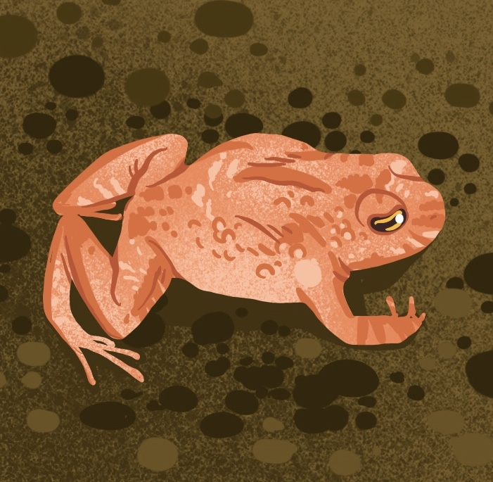

É uma rã de tamanho médio, conhecida somente da região do município de São Bento do Sul, Estado de Santa Catarina. É uma espécie ameaçada, criticamente em perigo de extinção. Na região em que foi encontrada ocorreu, nas últimas décadas, um intenso processo de ocupação urbana e conversão de áreas naturais em plantações de pinus e banana.
Existem poucos exemplares conhecidos e os últimos indivíduos foram encontrados há mais de 50 anos, apesar de vários esforços de busca. Acredita-se que seja uma espécie altamente dependente do ambiente florestal. Por não ter sido mais encontrada há décadas, apesar de muitas expedições pelos pesquisadores, não há muitas informações disponíveis sobre essa espécie.
